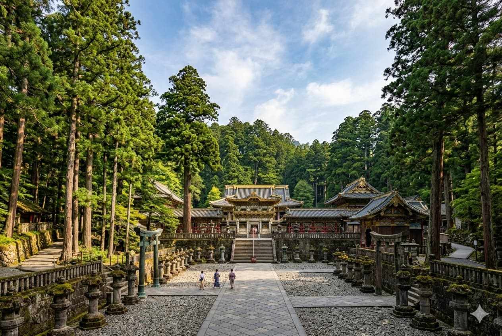

電車でお越しの方
東武日光駅・JR日光駅より
東武日光駅より東武バス「湯元温泉行き」に乗車（約75分）。終点「湯元温泉」バス停より徒歩3分。
無料送迎バス（要予約）
東武日光駅発：14:00 / 15:30
翠泉閣発：10:15 / 11:30
東武日光駅発：14:00 / 15:30
翠泉閣発：10:15 / 11:30
ACCESS & SIGHTSEEING
東武日光駅・JR日光駅より
東武日光駅より東武バス「湯元温泉行き」に乗車（約75分）。終点「湯元温泉」バス停より徒歩3分。
日光宇都宮道路 清滝ICより
日光宇都宮有料道路「清滝IC」より国道120号（いろは坂経由）で約45分。中禅寺湖を抜けて湯ノ湖方面へ。

周囲3kmの美しい湖。湖畔沿いの散策路はマイナスイオンに満ち溢れています。
日本有数の広大な湿原。木道が整備されており、四季折々の高山植物に出会えます。

徳川家康を祀る絢爛豪華な国宝建築。当館への行き帰りのお立ち寄りに最適です。